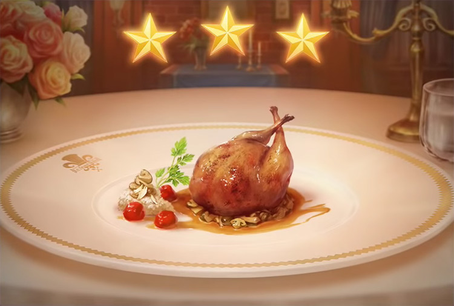

Stuffed quail

Description
A truly Southern recipe. A good side dish to go with this is sweet potatoes. You can also grill over coals.
Ingredients
- ¼ cup ground pork
- 2 tablespoons chopped fresh parsley
- 2 tablespoons finely chopped carrots
- 2 tablespoons finely chopped celery
- 1 clove chopped fresh garlic
- 2½ tablespoons fresh bread crumbs
- ground black pepper to taste
- 8 quail, cleaned and split lengthwise
- 1 tablespoon bacon drippings
Steps
- Preheat the oven broiler.
- In a bowl, mix the pork, parsley, carrots, celery, garlic, bread crumbs, and pepper.
- Arrange the quail in a baking dish. Separate the skin from the breast of each quail, and stuff with equal amounts of the stuffing mixture. Brush with bacon drippings.
- Broil the quail 7 minutes on each side in the preheated oven, or to a minimum internal temperature of 180 degrees F (85 degrees C).